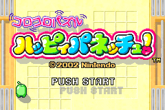

Korokoro Puzzle - Happy Panecchu! (Japan)
Stateless / Passcode 🎯 Tilt / Gyro Sensor 💾 MultiBoot 🎮 4P Link
Cartridge Identity
- Game Code
KHPJ(FamilyKHP)- Header Title
HAPPYPANECHU- Maker / Revision
01/ rev0- ROM Size
- 4.0 MiB (4,194,304 B)
- Save Media
None / Unknown- SHA-256
ddc4bc2724cffb035983c854681bc2d716381d6283c4b5cf50668e2f745d181e
Screenshots


Cartridge Hardware & Physical Peripherals
This cartridge PCB features physical hardware peripherals: 🎯 Tilt / Gyro Sensor.
Detailed register specifications, GPIO pinouts, and hardware architecture are available in the Cartridge Hardware Reference.
- Tilt Accelerometer (SRAM Bus)
rohm_bu3668k_accelerometer
•0x0E008000 (write 0x55 sample start)
•0x0E008100 (write 0xAA sample start)
•0x0E008200 (read X low)
•0x0E008300 (read X high / ready flag)
•0x0E008400 (read Y low)
•0x0E008500 (read Y high)
Link Cable & Multiplayer Communications
This title contains detected communication capabilities: 💾 MultiBoot 🎮 4P Link.
Detailed protocol specifications, SIO registers, Joybus commands, and MultiBoot sequences are documented in the Link & Multiplayer Reference.
- Multi-Player SIO (4P)
- 16-bit ring network · SIOCNT (
0x04000128) literals:0x05529c,0x05589c,0x055b98· SIODATA32/SIOMULTI0 (0x04000120) literals:0x055830,0x319f08,0x319f60 - Single-Cart MultiBoot
- Single-Cartridge MultiBoot (Download Play) client/server handler · Thumb SWI 0x25 (
0xDF25):0x0fde80,0x11018c,0x112660,0x12c436
Cartridge Storage Architecture: Stateless / Passcode
Zero non-volatile battery hardware: This cartridge PCB contains ROM only (no SRAM, Flash, or EEPROM chips). Progression is preserved via on-screen passcodes or session-only gameplay. No
.sav file is generated or required.
Text, Fonts & Scene Data
- Primary Text Encoding
- LZ77-compressed ASCII (
1ASCII strings ·200Shift-JIS runs ·1LZ77 ASCII blocks) - Font & VWF Indicators
- VWF Width Table 1bpp Font · BIOS SWIs: BitUnPack
0x10:11· LZ770x11/12:19· Huffman0x13:8· RLE0x14/15:17 - Scene & Packaging
17ROM pointer tables (≥32 entries,2≥200) ·0relativeu32TOCs ·152OAM metasprite hits
Password System
- Save Media
- Battery-Backed (EEPROM)
- Password Class
- Password UI Strings Detected (
password_ui_strings_only)